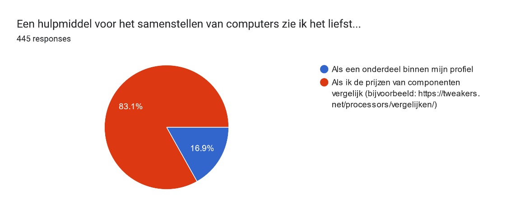

Introduction
Tweakers.net is a popular Dutch consumer electronics and technology website, with a strong focus on computers. As a frequent visitor to the website, I noticed a lack of tools to help users easily assemble a computer. Currently, users have to research and ensure compatibility of each component themselves.
With the approval of Tweakers, I took it upon myself to explore and design a tool that would help the users of Tweakers pick the right parts when building their PCs for my graduation project. In this case study, I will outline my process and conclusions in developing a concept, validating it, and providing recommendations for future implementation.

Tweakers primarily generates revenue through advertising and affiliate programs that redirect users to other webshops. One of the key features of Tweakers is the Pricewatch, which allows users to compare prices of electronics across various webshops. Many Tweakers users seek advice and information on computer components before purchasing them to replace or build their own desktops.
Problem Statement
Many computer components have varying compatibility requirements and specifications, making it challenging for users to select the right components to build their computer. Additionally, users must consider other factors such as performance and budget.
Design Challenge
"How can we create a digital interactive tool that assists Tweakers users, particularly experienced computer builders, in selecting the right components for their build?"
Sub-Questions
- What are the needs and preferences of experienced computer builders who use Tweakers?
- How can we design a digital interactive tool that meets the needs of Tweakers users?
- How can the tool assist users in selecting the appropriate components for their build?
Research
In the initial phase of the project, I conducted an exploratory competitive analysis to investigate how competitors assist users in building a computer. I researched the functionalities that computer builders use on the Tweakers website, such as the Pricewatch and Wishlist (Wenslijst in Dutch). The findings of this research were utilized in the ideation process and were also discussed during interviews.

To better understand the target audience and the customer journey when building a computer, I conducted five semi-structured interviews. I discovered that the price-to-performance ratio was the most important factor in choosing a component. Gaming was the most common use case. Users relied heavily on recommendations, such as guides, reviews, and YouTube videos, for individual components and complete builds. The competing PCPartPicker tool was less frequently used due to a lack of Dutch webshop integration. Users mainly kept track of their builds using Wordpad lists, shopping carts, or separate browser tabs for each component.
An important learning from the interviews is that while most users I talked to were experienced, they too could make mistakes.
...For example, I bought a small-form factor power supply on accident, and it turned out the cables were too short to use in my mid-size case.
I also conducted a survey to obtain new insights and validate my earlier research. I shared the survey on the Tweakers website's Pricewatch pages for PC components, where my target audience was most accessible. With 425 respondents, the majority of computer builders were experienced or highly experienced, with over 68.2% having built a computer more than four times. The survey validated that the target audience values the price-to-performance ratio.

Requirements
Based on my research I set the following requirements:
-
The tool checks product compatibility
Despite the audience's extensive experience in assembling computers, they may overlook incompatibilities, which can ultimately cost them time and money.
-
The tool provides insight into the most important information about components
According to the audience, the most important information about components is performance and price-performance ratio, performance, price, user reviews, and specifications.
-
The tool offers recommendations to the user
When assembling computers, the audience often relies on recommendations from others.
-
The tool is clear and easy to navigate
The user can easily maintain an overview, and the most important information is visible to the audience.
Ideation & Concept
During the ideation phase, I first analyzed the competition to identify best, good, and bad practices. One of the best practices that inspired me was Newegg's tool, which was integrated into the product catalog, creating a seamless user experience. I also found that tools that efficiently utilized screen space and provided important information were good practices, while tools with long and cluttered component lists and inadequate information were bad practices.

After creating a shortlist of requirements, I brainstormed potential solutions using the "how may we" technique, followed by the Crazy Eight method to generate out-of-the-box ideas. I combined the ideas from both sessions to create potential concept directions for my project.
Concepts
After the brainstorm session, I diverged, and I came up with three conceptual directions based on the ideas generated and prior insights. I presented these to both fellow students and stakeholders for feedback. My three concept directions are:
- "Overlay" Solution
The tool is integrated on the right-hand side of the existing Pricewatch product list view. The advantage is that it is technically feasible to integrate the tool within an existing page. However, the Pricewatch is not specifically designed for building PCs and it may be difficult to translate this concept to mobile devices.
- "Single Page" Solution
The tool is limited to a single separate page. Components are chosen from a list that is specific to building PCs. The advantage of this concept is that there is enough space to meet the requirements of the target audience. The disadvantage is that the information density is very high.
- "Dashboard" Solution
The user is provided with a user-friendly visual display that supports them in building a computer. The advantage of the visual display is its user-friendliness and the overview it can provide. However, experienced users may not need this level of support, and the visual elements take up valuable space.
Picking a direction
To better understand the target audience and an important stakeholder and to justify the choice of a conceptual direction, two things were done: reaching out to two Tweakers editors, who are important stakeholders and conducting a new survey to better gauge the target audience's preference and gain insights into how they build PCs.
The editors' preferred conceptual direction was a hybrid of the first and second directions, but they leaned more towards the second due to its better mobile compatibility. They didn't see the need for visual support offered by the third direction. The survey was used to determine the target audience's preference for the tool to be integrated as part of the "Pricewatch" or as a separate tool within their user profile.
Design Process
Prototype & Validation
Using my strong foundation in front-end code, I was able to quickly create a testable prototype. The tool is inherently non-linear, and there are countless ways to use and navigate through it. With a programmatic approach, I can test and demonstrate a large number of scenarios with my prototype.
Try the prototype out by clicking here!Creating and providing a prototype that closely resembles the final implementation allowed me to gain valuable insights, both qualitative and quantitative, during the project's validation phase.
Validation
The validation process of the PC Builder tool was done through two test rounds and a final validation with a larger sample size. The purpose of the validation was to find and improve the "low hanging fruits" of the tool, get feedback on the tool's usability, and assess the performance of the tool based on the shortlist criteria.
In the first test round, two respondents tested the first version of the prototype, and their feedback was used to find the major areas for improvement. The test revealed that the users did not feel triggered to open the tool, leading them to miss out on essential information. Also, the tool only corrected errors after the fact and did not offer a follow-up step after making an incorrect selection. The shortlist score, which included criteria such as compatibility checks, component information, user recommendations, and tool usability, showed that the tool had room for improvement.
Following the first test round, I brainstormed possible solutions and iteratively improved the tool. The second test round involved two different respondents, and their feedback indicated a more positive user experience. Users were notified about incompatible components beforehand and did not make any errors, as opposed to the first test round, where they did. The tool was now more accessible, as it was open by default, and the test respondents found it easy to use.
Finally, a larger sample size of 176 respondents validated the final version of the tool. The feedback from the sample revealed that the tool was well-received, with 75% of respondents giving a score of 4 or higher for the shortlist criteria. The compatibility check and component information features received high scores, indicating that the tool fulfilled the users' needs.
In conclusion, the validation process shows that the PC Builder tool had undergone several iterations to improve its usability, compatibility check, and information provision for the components. The feedback from the larger sample validated that the final version was well-received by the users and fulfilled their needs.
Future
Feasability
To realize the concept, the client needs to invest in making the data more suitable for the tool. While it is technically feasible, a considerable investment may be necessary. Additionally, there will always be edge cases where the tool may not prevent all errors. The client needs to prepare for such scenarios, where users may try to hold them accountable for any damages caused.
Recommendations
To make the concept a further success, I recommend implementing several changes:
- Implement A/B testing for a clearer button or interaction to add a component to a list.
- Explore ways to increase the authority of "Best Buy Guide" recommendations, such as displaying author names or linking to articles.
- Make the lists shareable to allow users to share them with friends and family.
- Show performance and price-performance ratio in the Pricewatch component list to enable better comparison before adding a component to a configuration.
- Consider implementing a toggle to filter out incompatible choices, as many users expressed a preference for not seeing incorrect choices at all.
By implementing these changes, the client can make the tool more user-friendly, increase the authority of the recommendations, and enable users to share their configurations with others. These changes would ultimately lead to better user satisfaction and higher conversion rates.
Client Feedback
As a UX designer at Tweakers and the supervisor of the internship programme at the company, I would say that the PC Builder feature that Arthur designed and prototyped is complete and fulfils all requirements we set at the beginning of the project. The user journey is clear, there are helpful error messages and warnings along the way, components have clearly indicated empty and filled states, and the entire interaction has a clear end goal.
The success of the prototype I find is largely due to the rigorous research and testing process that Arthur applied to his project. The fact he designed and developed the tool iteratively, testing at each stage, meant that the decisions he took at each turn were validated and supported by solid qualitative and quantitative insights. The final evaluation of the prototype by the Tweakers community is a testament to this.
Lastly, the final version of the prototype Arthur leaves us with, and the list of next steps he has devised, together represent the first major milestone towards delivering the PC Builder feature to all Tweakers users. The handover is in fact so complete, that our development team is eager to get started on implementation before our product managers have even calculated its commercial viability.